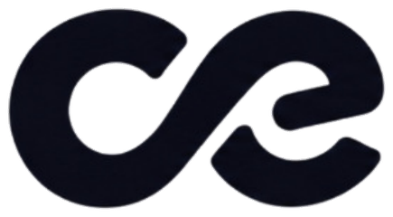

Le growthqui s’intègre.
On rejoint votre équipe quelques heures par semaine pour structurer et piloter votre croissance — pas depuis l’extérieur.
Déjà dans quelques équipes. Cely s’intègre, il ne se contente pas d’intervenir.
Le digital tourne. Mais qui le pilote ?
Chacun avance de son côté.
C’est ce qu’on fait.
Du growth. Mais surtout
quelqu’un dans la boucle.
Cely ne pilote pas votre croissance depuis l’extérieur. Quelques heures par semaine, vraiment dans l’équipe — les points, les priorités, les décisions.
Célien intégré à une réunion d’équipe startup — 3 à 5 personnes, lumière naturelle, cadrage documentaire
Vous avez quelqu’un qui tient la vue d’ensemble.
Les commerciaux savent à qui parler.
Les tests ne meurent pas après le lancement.
Avant d’agir, comprendre le business.
Un audit complet de l’acquisition.
Un plan d’action clair et priorisé.
Un canal outbound et un canal inbound déjà lancés.
Un engagement de mise en place — pas une promesse de résultat business, qu’on ne peut pas garantir à ce stade.
Comprendre d’abord.
Exécuter ensuite, ensemble.
On regarde votre situation
Un call de découverte, court. On cadre votre contexte, vos canaux et vos objectifs — sans questionnaire administratif à remplir avant.
On vous montre ce qu’on voit
2 à 3 problèmes concrets, identifiés et expliqués — avec leur impact sur votre croissance. Pas encore le plan détaillé.
On construit le plan ensemble, et on démarre
Growth Part-Time : Cely rejoint votre équipe pour exécuter, tester et piloter la croissance dans la durée.
À partir de [PRIX_MINIMUM_A_CONFIRMER] €/mois, selon le périmètre et les enjeux — devis après le call de découverte.
Premier mois non satisfait ? Remboursé — si les livrables engagés (audit, plan d’action, canaux lancés) n’ont pas été délivrés.
Vous préférez un diagnostic complet et autonome, sans engagement de suite ? Voir l’Audit Digital
C’est un moment, pas une taille.
Cely ne travaille pas avec tout le monde. On connaît ce moment précis par cœur — celui où le produit tient déjà, mais où personne ne pilote encore l’ensemble.
REPLACE WITH REAL STARTUP / CELY PHOTO
Le produit fonctionne.
La traction arrive.
Mais le growth n’a pas encore de pilote.
Ça vous ressemble ? Alors Cely commence à avoir du sens.
Un aperçu, pas une promesse.
Un extrait réel de ce que contient un Audit Cely — pas une maquette de marketing.
“[VERBATIM CLIENT À FOURNIR]”
[Nom, rôle — entreprise à fournir]
On ne livre pas une stratégie. On la construit avec vous.
Comprendre le marché, le produit et l’équipe avant de toucher à un seul canal — c’est le premier point de notre manifeste.
Lire notre manifesteCe qu’on observe, ce qu’on teste.
Pourquoi lancer une campagne sans audit coûte plus cher qu’il n’y paraît
Growth / 6 min de lecture
GEO : ce qui change vraiment pour l’acquisition en 2026
Connecter LinkedIn et l’outbound sans multiplier les outils
On préfère peu d’équipes.
Mais vraiment dans la boucle.
Si votre produit tient, que la traction est là et que le growth manque encore d’un vrai pilote, il y a probablement quelque chose à construire ensemble.
On regarde votre situation. Si ça colle, on avance. Sinon, on vous le dira.
Avant d’accélérer, regardons où vous allez.
Un diagnostic complet de votre acquisition, restitué clairement, pour savoir exactement quoi faire — et dans quel ordre.
Un diagnostic à 360°, sans jargon à 360°.
Quatre temps, un seul fil.
Découverte
On cadre votre contexte : marché, produit, équipe, canaux déjà en place. Pas de brief à préparer, on pose les bonnes questions.
Analyse
SEO, SEA, site, réseaux, funnel, concurrence : on regarde ce qui marche, ce qui freine, et ce qui manque pour que ça se connecte.
Restitution
Présentation du diagnostic et de la feuille de route priorisée, en direct, pour répondre à toutes les questions sur le moment.
Suivi
Deux points courts pour vérifier que la feuille de route s’applique bien — et l’ajuster si le terrain a changé.
Environ 50 pages. Zéro remplissage.
Pas un document qu’on referme après lecture. Une feuille de route qu’on peut suivre pendant six mois.
- Diagnostic — ce qui bloque, canal par canal.
- Opportunités — ce qui est prêt à être activé.
- Priorités — l’ordre dans lequel agir, et pourquoi.
- Feuille de route — un plan à suivre, pas un rapport à ranger.
Ce que vous obtenez n’est pas un document.
Un PDF de 50 pages qu’on lit une fois et qu’on range.
Comprendre précisément ce qui bloque votre croissance aujourd’hui.
Voir les opportunités que vos canaux actuels n’exploitent pas encore.
Savoir quoi prioriser en premier — et ce qui peut attendre.
Éviter les dépenses qui n’auraient rien changé.
Aligner enfin vos canaux sur une même feuille de route.
1 250 €
Forfait fixe. Pas d’heures facturées, pas de devis à négocier.
Ce prix couvre l’ensemble du parcours : découverte, analyse complète, livrable stratégique, restitution et suivi.
Un growth dans l’équipe.
Sans recruter à temps plein.
Cely rejoint votre équipe quelques heures par semaine pour exécuter, tester et piloter la croissance — dans la durée, pas dans un rapport.
Votre équipe

+ Cely, quelques heures / semainePas une mise en scène. Une place réelle dans les échanges, les priorités et les résultats de la semaine.
Pas un rapport mensuel. Une présence continue.
Quatre familles de travail, une seule direction.
Comprendre
Construire
Tester
Piloter
Ce n’est pas un tarif horaire. C’est le seuil en dessous duquel on ne peut plus vraiment s’intégrer.
Ce qu’on observe. Ce qu’on teste. Ce qu’on apprend.
Des notes de terrain sur le growth, pas du contenu pour occuper l’espace.
Ce qu’on croit, avant de toucher à un seul canal.
On ne croit pas au growth piloté à distance.
Un plan envoyé par email, sans jamais mettre les mains dans votre réalité, ce n’est pas une stratégie. C’est un pari.
On commence par comprendre.
Le marché, les clients, le produit, les contraintes, l’équipe — avant de toucher à un seul canal d’acquisition.
On commence toujours ici.On construit avec l’équipe qui va le vivre.
Un bon plan de croissance ne se livre pas depuis l’extérieur. Il se construit avec les personnes qui vont l’exécuter.
Séance de travail, équipe cliente
On préfère peu de clients, bien accompagnés.
À beaucoup de clients, mal écoutés. Ce n’est pas un choix de croissance à tout prix. C’est un choix d’exigence.
On s’intègre.
Quelques heures par semaine, on devient un membre de votre équipe growth — pas un prestataire de plus sur la liste.
On reste tant que ça marche.
Pas d’engagement figé. On continue parce que le travail avance, pas parce qu’un contrat nous y oblige.
Le growth qui s’intègre.
Parlons de ce qui bloque votre croissance.
30 minutes. Pas de pitch. On regarde votre situation, ensemble.
Message envoyé.
On revient vers vous sous 48h ouvrées.
Vous parlerez directement avec moi.
Célien — Cely
Choisir un créneau
30 minutes dans l’agenda, sans détour par un formulaire.
Un audit peut suffire
Si vous n’avez pas encore de diagnostic clair, commencer par l’Audit à 1 250 € est souvent le point de départ le plus simple.
Voir l’AuditVous voulez travailler avec Cely
Freelance, expert SEO, media buyer, designer, dev… la page Nous rejoindre est faite pour vous.
Voir Nous rejoindreVous êtes très bon dans votre domaine ?
On devrait peut-être se connaître.
Cely ne fait pas tout en interne — et c’est volontaire. Quand une mission demande une expertise précise, on fait intervenir la bonne personne. Cely reste responsable du pilotage global.
Selon la mission, Cely connecte la bonne expertise.
Acquisition
Créatif
Tech
Cely pilote. Vous intervenez sur votre expertise.
Cinq prestataires qui négocient chacun séparément avec le CEO.
Cely garde la vue d’ensemble et la relation client.
Vous intervenez sur ce que vous savez faire de mieux.
Le client garde une seule direction, jamais cinq interlocuteurs.
Vous dites quand quelque chose n’est pas votre expertise.
Vous aimez comprendre le contexte avant d’exécuter.
Vous savez travailler avec une petite équipe.
Vous communiquez clairement.
Vous préférez faire bien que faire beaucoup.
Vous envoyez un livrable et disparaissez.
Vous appliquez toujours la même recette, quel que soit le contexte.
Vous préférez un brief de 40 pages à un vrai échange.
Présentez-vous en quelques lignes.
Si vous pensez le growth comme nous, lisez le Manifeste.
Mauvais chemin. Ça arrive.
Cette page n’existe pas — ou plus. La ligne vous ramène à l’accueil.
Retour à l’accueil